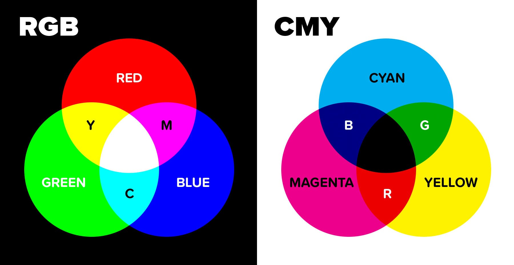

In de informatica worden kleurmodellen gebruikt om op een gestructureerde manier kleuren te definiëren en ook weer te geven. Dankzij deze systemen kunnen we kleuren consistent begrijpen, nabootsen en bewerken. Ze spelen een belangrijke rol in diverse vakgebieden, zoals grafische vormgeving, fotografie, drukwerk en digitale schermen. Kleurmodellen beschrijven kleuren door middel van specifieke parameters en numerieke waarden, wat essentieel is voor het nauwkeurig beheren en overdragen van kleurinformatie. Er bestaan verschillende soorten kleurmodellen, en hieronder lees je meer over de meest gebruikte en meest voorkomende.
Je computerscherm is opgebouwd uit talloze pixels. Achter elke pixel bevinden zich drie lampjes: één rood, één groen en één blauw, wat verwijst naar het zogenaamde RGB-kleurmodel. De afkorting "RGB" verwijst namelijk naar de drie primaire kleuren: Rood, Groen en Blauw (Red, Green, Blue). Het RGB-model is gebasseerd op een zwarte achtergrond.Als het beeldscherm uitstaat is het zwart. De lampjes van de pixels branden dan niet. Elk van deze lampjes kan in helderheid variëren. Je kunt hierbij een waarde kiezen tussen de 0 en 255. Deze waarden bepalen de intensiteit van een enkele pixel. Stel dat je het rode lampje instelt op 255 en de groene en de blauwe lampje op 0, dan wordt de pixel rood. Om dit weer te geven, kun je niet simpelweg zeggen dat het groene en blauwe lampje uit moet zijn. Je moet wel de RGB-volgorde volgen. Puurrood wordt weergegeven als: (255,0,0), puurgroen als: (0,255,0) en puurblauw dus als: (0,0,255).
Het CMY-kleurmodel is een veelgebruikt systeem in de drukwerk- en printmedia-industrie. De letters "CMY" staan voor de drie basiskleuren die dit model gebruikt: Cyaan (Cyan), Magenta (Magenta) en Geel (Yellow).Bij dit model worden de kleuren aan een witte achtergrond toegevoegd. In het CMY-model worden kleuren samengesteld door verschillende hoeveelheden van deze drie inktkleuren te combineren. Cyaan, magenta en geel zijn de subtractieve primaire kleuren, ze absorberen namelijk licht in plaats van het te reflecteren. Een mix van cyaan, magenta en geel geeft een donkergrijze kleur en geen zwart. Om zwart te kunnen maken wordt een zwarte kleur toegevoegd, namelijk de kleur Key, ook wel bekend als "Key color". Zo onststaat dan het CMYK-model. Zwart wordt toegevoegd om contrast, diepte en schaduw in afbeeldingen te versterken en details te verduidelijken.
